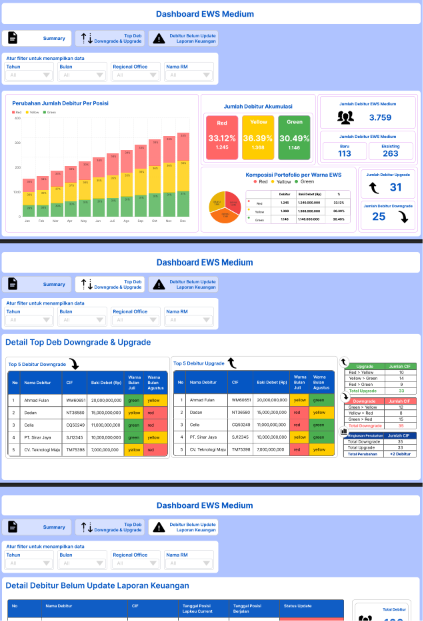
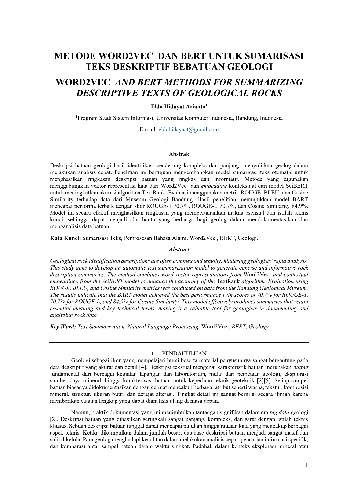
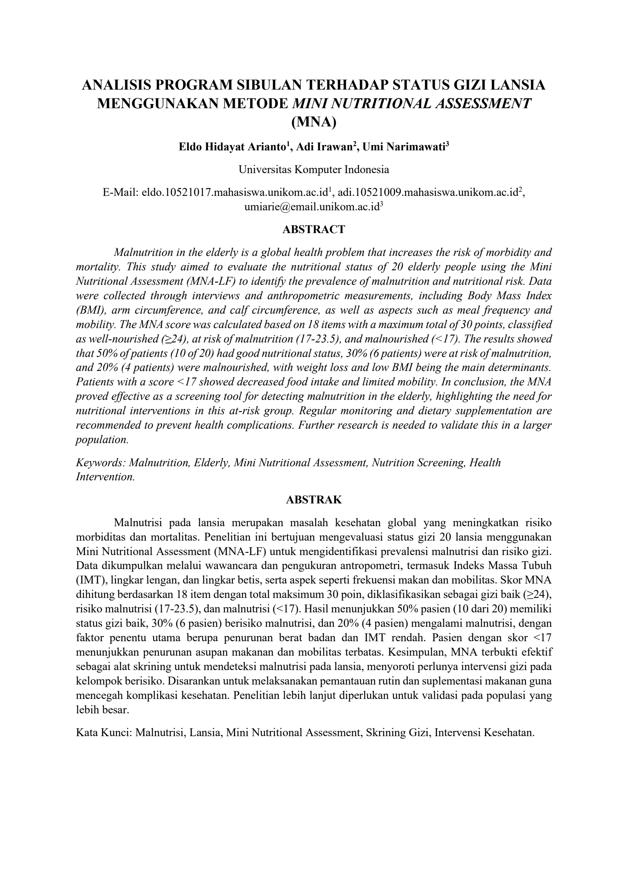
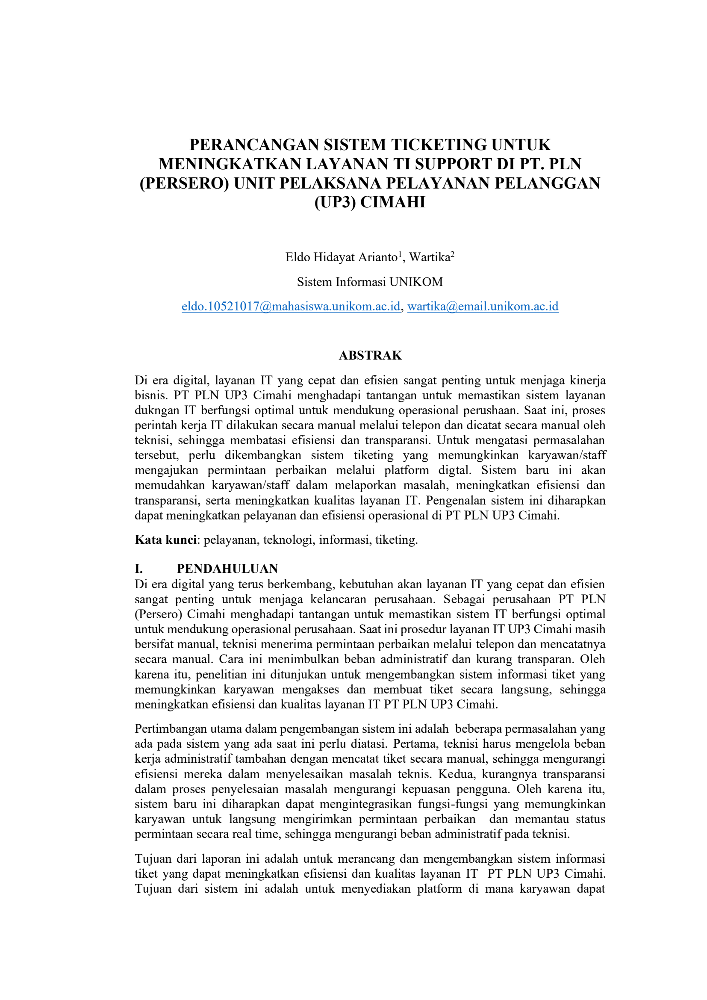

Halo, saya
Information Systems graduate (GPA 3.63/4.00) dengan pengalaman magang Data Analyst di PT Bank Rakyat Indonesia. Berfokus pada dashboard Power BI, risk monitoring (EWS/CRR), dan NLP.
Geser untuk melihat semua proyek.




Universitas Komputer Indonesia — Lulus 29 Agustus 2025
IPK 3.63 / 4.00 | Akreditasi Unggul
Cisco — 17 Feb 2023
Cisco — 28 Aug 2023
Brighten English Pare Kediri — 11 Oktober 2026
Total Score: 557
Media Informatika Professional Certification — Dec 2025
Terbuka untuk peluang Data Analyst, Business Intelligence, dan Risk Analytics.